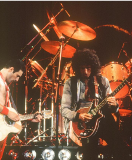
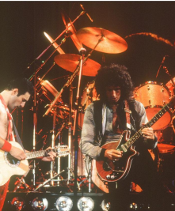

I was largely inspired to buy the guitar by the lead guitarist of the band, Brian Harold May. His delivery of “Love of my life” in Tokyo, 2014, deeply shocked me. Personally, I also learned this guitar part and played it countless times.
Even though I listened to Queen before the movie, after watching it I became a real fan. I've listened to all of the band's albums, many of the songs are on my list of favorite pieces of music, and the band itself has become one of my most revered.